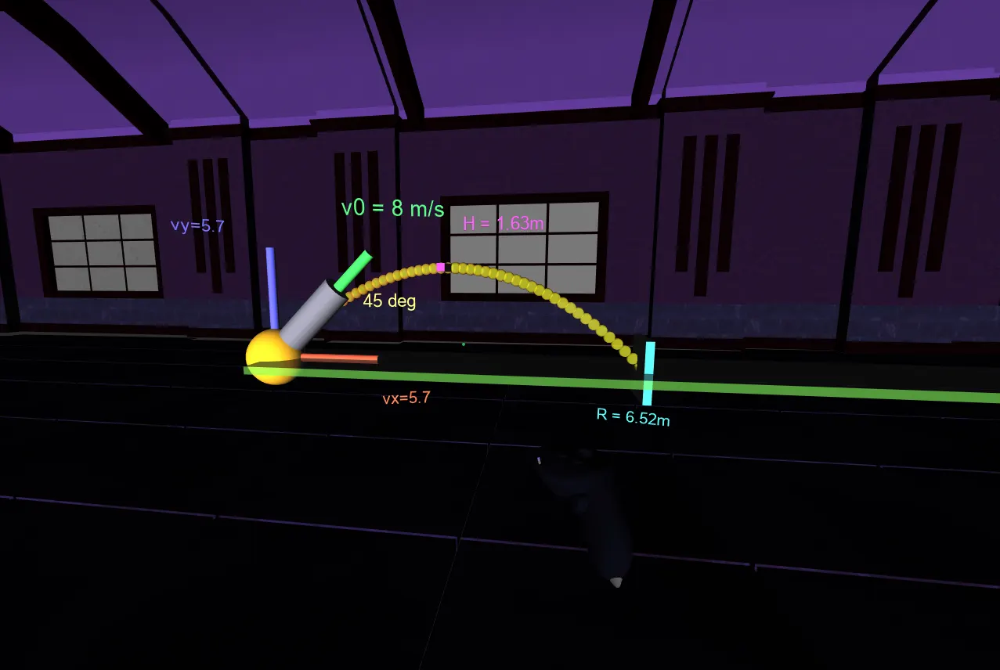

I build VR labs that let students see how engineering and computing work.
XR Engineer in Karachi. I develop immersive simulations in Vizard 8 and SightLab VR Pro, with eye tracking to measure how students learn. Looking for a funded MS / research assistant position in immersive learning.
zarrarabbas73@gmail.com GitHub LinkedIn

Engineering VR labs 2026 · Vizard 8, Python, Blender
Built at AIDL, the WorldViz distributor in Pakistan, for university engineering departments.
A&VR Interactive Learning System Final Year Project · 2026
Twelve VR modules that turn abstract CS topics into rooms you can walk through: a RISC pipeline you step cycle by cycle, a SQL query moving through the optimizer, packets encrypted in front of you. SightLab logs gaze fixations, dwell time and controller paths in every module for learning analysis.
- Modules
- 12
- Stack
- Vizard 8, SightLab, Meta Quest Pro
- Recognition
- 2nd place, DUET FICS exhibition; IEEEP Students Seminar
- Supervisor
- Dr. Syed Ali Asgher
Other work
- vizard-mcp MCP server that lets AI assistants build and edit Vizard 8 scenes.
- 3D reconstruction of a Karachi landmark for virtual heritage tours.
- VR safety scenario: identify the fire class, pick and use the right extinguisher. Video
- Sage, AI tutor avatar Voice-activated Gemini tutor with speech and lip-sync inside the VR modules.
- Smart attendance Real-time face recognition attendance with OpenCV.
About
BS Computer Science, Dawood University of Engineering & Technology, Karachi (CGPA 3.65, merit scholarship). I now work as an XR engineer at AIDL, building Vizard content and supporting university VR installations. I'm interested in how immersive simulation and eye tracking can measure and improve learning in engineering and safety training.
- 2026 — XR Engineer, AIDL (WorldViz Pakistan)
- 2024–25 Cybersecurity Analyst, Cybarrier Solutions
- 2023–24 IT Intern, Pakistan Aeronautical Complex
- 2022–26 BS Computer Science, DUET
Write to me at zarrarabbas73@gmail.com · +92 306 2305023 · Download CV